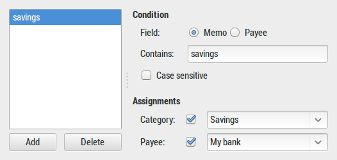

Automatic assignment will allow you to automatically set a Payee and/or a Category to a transaction based on a string contained in the Memo or Payee. The assignment is applied after each file import so that you gain some time with assignment of Category and this permit to ensure the right Payee is set as well.
Open the assignment dialog from either the main-window menu or the tool-bar.

Then create an assignment rule:
HomeBank will assign the Payee and/or the Category of a transaction if it is empty.